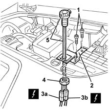

5580E24 car alarm cut-out switch (in engine bay) - r r
- Path
- Procedures > 55 ELECTRICAL EQUIPMENT > 5580 SPECIAL ACCESSORIES > 5580E ANTI-THEFT DEVICE > 5580E24 car alarm cut-out switch (in engine bay) - r r
- Kind
- repair procedure (removal / refitting; the operation number is the code)
- Applies to
- all engines; all production periods
- Interactive page
- https://sloeber94.github.io/elrnDB-fMltpl/en/#/2891987
Applies to: all engines; all production periods
 Removing
Removing
 Refitting
Refitting1. Svitare le viti della staffa di sostegno interruttore.
2. Spostare leggermente la staffa.
3. Scollegare le connessioni elettriche (3a, 3b).
 | Name | Connector |
|---|---|---|
3a | Alarm switch | H70A |
| Name | Connector |
|---|---|---|
3b | Alarm switch | H70B |
4. Svitare il dado.
5. Recuperare l'interruttore con briglia.

Applies to: all engines; all production periods
Refitting
RemovingControllare che l'Interruttore per esclusione antifurto non sia danneggiato.
Posizionare l'interruttore sulla staffa e fissarlo con il dado.
Collegare le connessioni elettriche.
Avvitare le viti.
Provare la funzionalità dell'interruttore per esclusione antifurto.